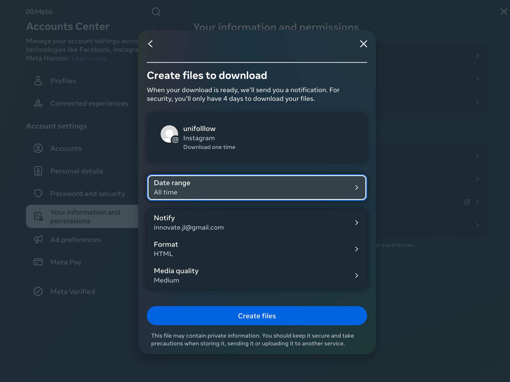

Unifolllow
The Only Free Way to Check Your Unfollow/Follow On Instagram
About
On Instagram, frustration mounts as users struggle to identify who has unfollowed them. Imagine the exasperation of scrolling through our endless following list, only to barely find an answer.
Enter Unifolllow.
Leveraging Instagram's data, Unifolllow offers a seamless solution, free from ads, tracking devices and cumbersome interfaces. Say goodbye to manual tracking and welcome a new era of effortless, and organic, unfollower detection.
Benefits
How it works
Video Instructions
- Go on your Instagram page and download your data.
- Unzip the file you downloaded and add it into Unifolllow.
- Bonus: In the future, see an updated list of unfollowed users by clicking/downloading the "Download Follower Information" button to filter out those you've already seen.
Step by Step Instructions
- Go on the Instagram page of your profile and click on "Settings".
- Click on “See more in Accounts Center”.
- Then, click on "Your information and permissions" -> “Download your information” -> "Download or transfer information" -> "Some of your information" -> scroll down until you find "Followers and the following".
- Click on "Download to device" -> "Create files" and be sure that the date range is set to “All time” instead of its default range “last year”. Either HTML or JSON is fine! 
- Once your data is downloaded, unzip the file and add "followers_1.html" and "following.html" into Unifolllow.
- You can also use "followers_1.json" and "following.json".
- Click on “Find Out Now” and see who has unfollowed you!
- Bonus: Click the "Download Follower Information" button to create a "known-following.txt" file with your followers list. In the future, add this file along with "followers_1.html" and "following.html"to update the list of unfollowed users, filtering out those you've already seen.
{kind=link}
{kind=link}
{kind=link}
{kind=link}
{kind=link}
{kind=link}
{kind=link}
Try it out!
Get in touch
Thank you so much for the support! Let us know how we can improve. Left side are our contact information for inquiries or send us any message :)
© Unifolllow. All rights reserved. Design: HTML5 UP